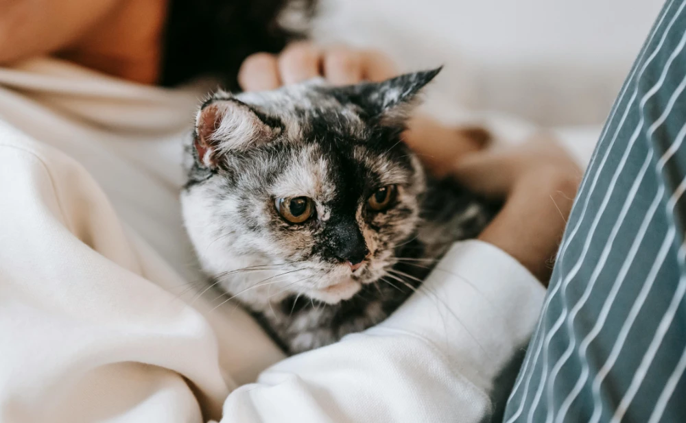

Djur är inga produkter
 På Trygga Tassar vill vi sprida kunskap om varför oetisk och illegal avel är ett allvarligt problem för katter. Oseriösa uppfödare sätter ofta vinst före djurens välfärd, vilket leder till att många katter föds med medfödda sjukdomar, svaga immunförsvar och psykiska problem på grund av bristande socialisering och dålig miljö under uppväxten. Illegal avel bidrar dessutom till den redan stora överpopulationen av hemlösa katter - ett problem som orsakar stort lidande och överfulla katthem över hela Europa.

Vi på Trygga Tassar tar tydligt avstånd från all form av oetisk avel och arbetar aktivt för att
motverka den. Det gör vi genom att enbart förmedla adoptioner från seriösa och
kontrollerade katthem, där varje individ får den vård, trygghet och omsorg den behöver.
Varje katt som tas in hos oss blir veterinärundersökt, vaccinerad, kastrerad och ID-märkt
innan adoption, vilket bidrar till att minska risken för oansvarig avel.
Vi arbetar också för att öka kunskapen hos blivande kattägare. Genom information, rådgivning och kampanjer vill vi uppmuntra människor att välja adoption framför köp, och att noggrant granska uppfödare innan de överväger att köpa en katt. Genom att minskaefterfrågan på illegalt avlade katter kan vi tillsammans sätta stopp för de oseriösa uppfödare som utnyttjar djur för ekonomisk vinning. På Trygga Tassar ser vi varje katt som en individ med känslor, behov och rätt till ett värdigt liv. Vårt mål är att skapa en trygg framtid där ingen katt ska behöva födas till lidande eller säljas under oetiska förhållanden. Tillsammans kan vi göra skillnad - en tass i taget.